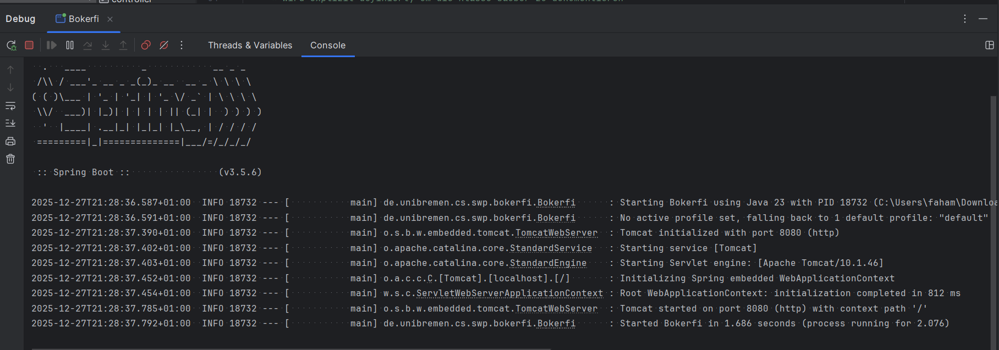
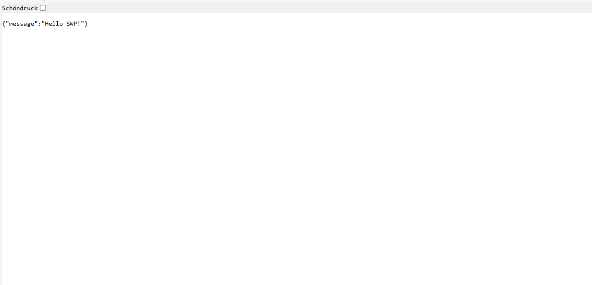
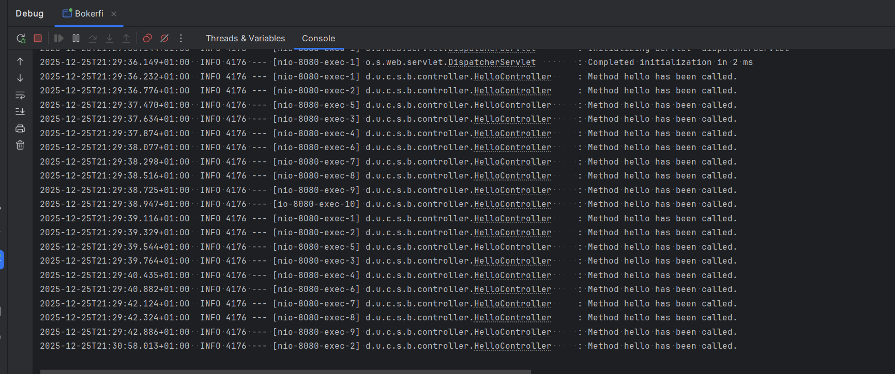
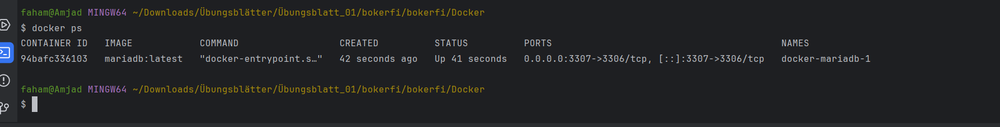
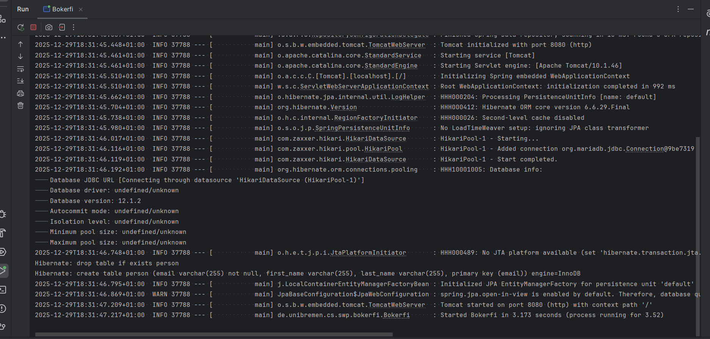
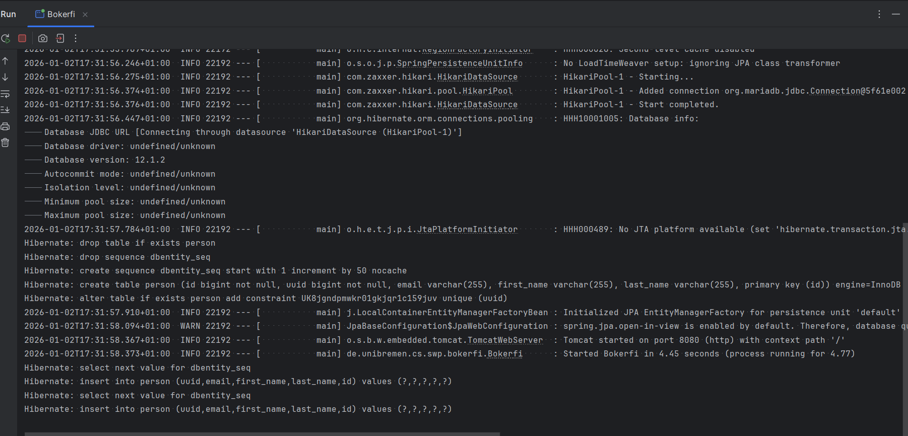
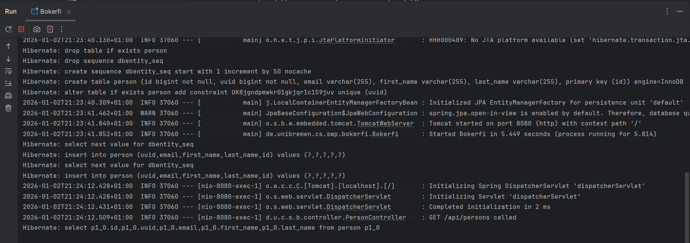
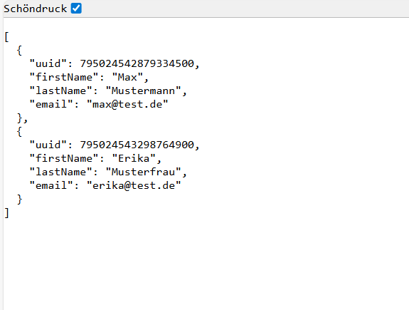
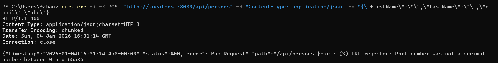
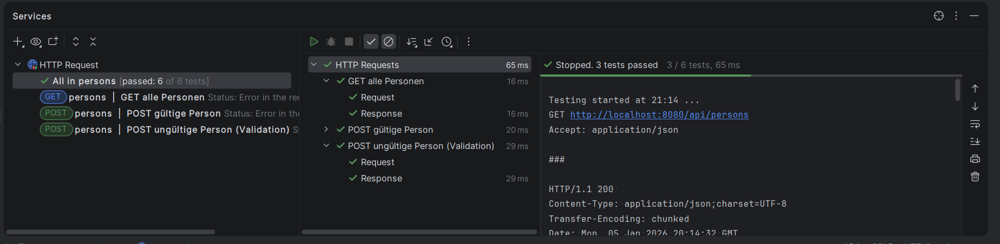

Modul: Softwareentwicklung mit Web-Technologien (SWP)
Projekt: Bokerfi (REST-Backend)
GruppeMitglieder von AlFa: Amjad Faham, Khaled Almasri
Zeitraum: Übungsblatt 01 – Übungsblatt 09
Ziel dieses Übungsblatts war die Initialisierung eines Spring-Boot-Projekts mit Maven sowie das erste Starten der Anwendung.
BokerfiDie Spring-Boot-Anwendung startet erfolgreich auf Port 8080.
Screenshot: Spring Boot Start (Konsole)


Einführung in REST-Controller und HTTP-GET-Requests.
@RestController
public class HelloController {
@GetMapping("/api/hello")
public Map<String, String> hello() {
return Map.of("message", "Hello SWP!");
}
}
Der Endpoint /api/hello liefert JSON zurück.
Screenshot: Konsole (HelloController Log)

Einsatz von Docker zur Bereitstellung einer MariaDB-Datenbank.
docker-compose.yml erstellt
Der Port 3306 darf nur einmal belegt sein. Bei Fehlern muss
entweder Docker oder eine lokale MariaDB gestoppt werden.
Screenshot: docker compose up -d

Einführung in JPA und Entity-Mapping.
Basisklasse für alle Entitäten mit technischem Primärschlüssel und UUID.
@MappedSuperclass
public abstract class DBEntity {
@Id
@GeneratedValue(strategy = GenerationType.SEQUENCE)
protected Long id;
@Column(nullable = false, unique = true)
protected Long uuid = TSID.Factory.getTsid().toLong();
}
Trennung von Controller, Service und Persistence-Layer.
public interface PersonRepository extends JpaRepository<Person, Long> {
}
Enthält Geschäftslogik und kapselt Repository-Zugriffe.
Automatisches Erzeugen von Beispieldaten beim Start.
@Component
public class DataInitializer implements CommandLineRunner {
public void run(String... args) {
personCreateService.createPerson(
new PersonCreateDTO("Max","Mustermann","max@test.de")
);
}
}
Screenshot: Hibernate INSERT Logs

Bereitstellung eines REST-Endpoints zur Ausgabe aller Personen.
GET /api/persons
Screenshot: Browser JSON-Ausgabe Personen

Ziel dieses Übungsblatts war die saubere Trennung zwischen Persistenzschicht (Entity) und REST-API mittels DTOs. Außerdem wurde MapStruct zur automatischen Objektumwandlung eingesetzt.
Für die REST-Schnittstelle werden eigene Data Transfer Objects (DTOs) verwendet, um interne Entity-Strukturen nicht direkt nach außen zu geben.
Person – JPA Entity (Datenbank)PersonDTO – Ausgabe über die REST-APIPersonCreateDTO – Eingabe beim Erstellen neuer PersonenDie Umwandlung zwischen Entity und DTO erfolgt mit MapStruct. Der Mapper wird automatisch von Spring verwaltet.
@Mapper(componentModel = "spring")
public interface PersonMapper {
PersonDTO toDto(Person person);
List<PersonDTO> toDtoList(List<Person> persons);
}
MapStruct erzeugt zur Compile-Zeit eine Implementierung des Mappers
im Verzeichnis target/generated-sources.
Dieser Code wird automatisch generiert und darf nicht manuell verändert werden.
Screenshot: target/generated-sources

Screenshot: Browser_ueb08

Ziel dieses Übungsblatts war es, die serverseitige Validierung von
REST-Anfragen mit @Valid und Bean Validation umzusetzen.
Ungültige Eingaben sollen vom Server automatisch abgelehnt werden.
Der POST-Endpunkt zur Erstellung einer Person verwendet die Annotation
@Valid, um eingehende Requests zu prüfen.
@PostMapping("/api/persons")
public ResponseEntity<PersonDTO> createPerson(
@Valid @RequestBody PersonCreateDTO dto) {
...
}
Die Validierungsregeln sind im PersonCreateDTO definiert:
public record PersonCreateDTO(
@NotBlank String firstName,
@NotBlank String lastName,
@Email @NotNull String email
) {}
@NotBlank verhindert leere Namen@Email stellt ein gültiges E-Mail-Format sicher@NotNull verhindert fehlende Werte
Zur Überprüfung der Validierung wurde eine ungültige POST-Anfrage
an /api/persons gesendet (leere Namen und ungültige E-Mail).
Der Server antwortete korrekt mit HTTP 400 – Bad Request.
Damit ist nachgewiesen, dass die Validierung mit @Valid
funktioniert.

Zur Überprüfung der REST-Endpunkte wurde zusätzlich eine
.http-Datei im Projekt angelegt.
Diese ermöglicht es, HTTP-Anfragen (GET, POST) direkt in IntelliJ auszuführen,
ohne den Browser oder externe Tools zu verwenden.
Mithilfe der HTTP-Datei konnten sowohl gültige als auch ungültige
Requests getestet werden, um sicherzustellen, dass die
@Valid-Validierung korrekt funktioniert
(z. B. 201 Created bei gültigen Daten und
400 Bad Request bei ungültigen Daten).

In den Übungsblättern 01–09 wurde ein vollständiges Spring-Boot-Backend mit Docker, Datenbank, REST-API, DTO-Mapping, .HTTP und sauberer Architektur umgesetzt.